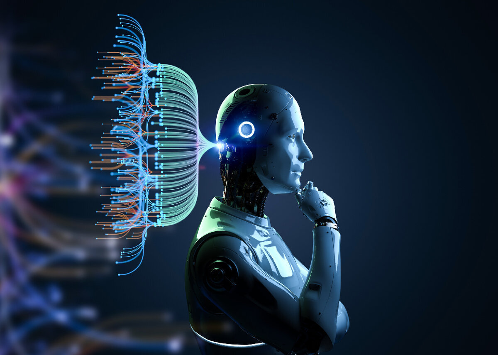
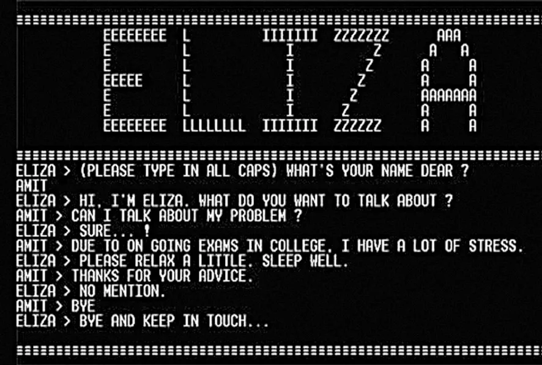
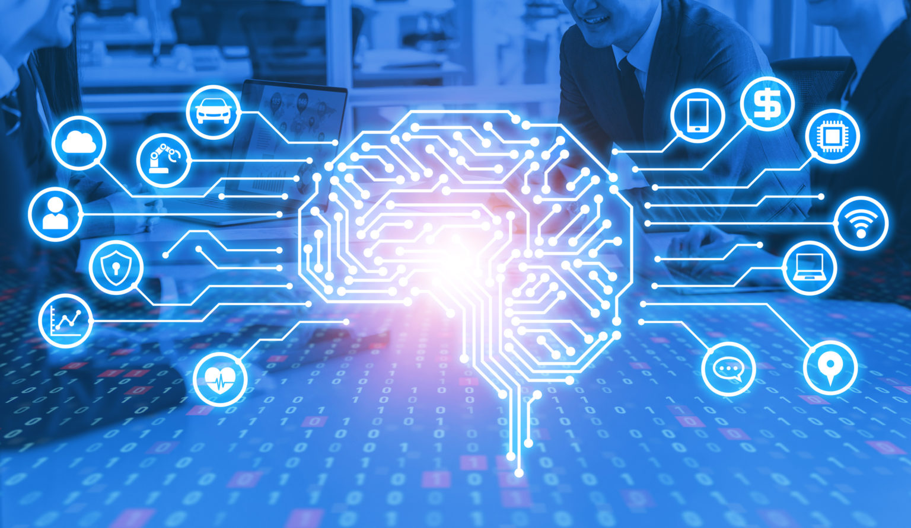

С чего всё начиналось и как искусственный интеллект применяется в современном мире

Понятие искусственного интеллекта
Искусственным интеллектом называют комплекс программ, разработанных с целью воспроизведения навыков, присущих человеку. Это способность заниматься решением проблем, планированием, пополнять запас своих знаний, улучшать подход к выполнению поставленных задач в ходе работы над ними.
В целом искусственный интеллект представляет собой набор моделей и методов, который способен на основе полученной информации сделать те или иные выводы. К примеру, это сортировка фотографий или текстов по заданным признакам, составление прогнозов по курсам валют и т.п.
1950 год - Алан Тьюринг:
Математик Алан Тьюринг,которого ещё принято считать отцом информатики, выпускает статью «Вычислительные машины и интеллект», в которой рассматривает вопрос «Может ли машина думать?»
Чтобы ответить на этот вопрос Тьюринг создал тест. Тест заключается в том, чтобы привлечь двух участников: тестера и машину. Тестер должен задавать вопросы участникам и получать на них ответы, не зная, с кем он общается. Машина считается "разумной", если она способна вести такую беседу так, что тестер не может определить, кому принадлежат ответы: человеку или машине. Если машина прошла тест Тьюринга, считается, что она обладает “искусственным интеллектом” - именно этот термин ввёл Джон Маккарти в 1956 на конференции о “механизации интеллекта” в Дармутском колледже.
И хотя тест Тьюринга не учитывал множесво факторов, в то время это был настоящий прорыв. И даже сегодня тест Тьюринга затрагивает нас, когда мы вводим капчу, но здесь уже компьютер проверяет нас.

Первые шаги
Ситуация с компьютерами значительно улучшилась, они стали производительнее и доступнее. Активно улучшались алгоритмы машинного обучения:
- 1966 - ELIZA.
- 1972 - PARRY
- Появились персептроны — первые нейронные сети
ELIZA - программа психотеропевт. По мнению некоторых экспертов в области искусственного интеллекта, именно Eliza впервые прошла тест Тьюринга. Но по большей части просто перефразировала высказывания пользователя, вырывая из контекста самые значимые слова.Если программа не находила ответ, то говорила «Понятно» и переводила тему разговора.

В 1972 году американский психиатр и учёный из Стэнфорда Кеннет Колби разработал программу Parry, иметирующую поведение параноидального шизофреника. Parry использовал диалоговые стратегии и даже обманывал психиатров: 48 % врачей, участвовавших в эксперименте, даже не поняли, что общаются с машиной., которую некоторые пользователи называли улучшенной версией Eliza. Parry и Eliza даже несколько раз «встречались» и «говорили» друг с другом.
Понятия искусственного нейрона и искусственной нейронной сети появились достаточно давно, еще в 1943 году. Эта была чуть ли не первая статья, в которой предпринимались попытки смоделировать работу мозга. Ее автором был Уоррен Мак-Каллок.Эти идеи продолжил нейрофизиолог Фрэнк Розенблатт. Он предложил схему устройства, моделирующего процесс человеческого восприятия, и назвал его «персептроном» (от латинского perceptio – восприятие). В 1960 году Розенблатт представил первый нейрокомпьютер – «Марк-1», который был способен распознавать некоторые буквы английского алфавита.Таким образом персептрон является одной из первых моделей нейросетей, а «Марк-1» – первым в мире нейрокомпьютером.
Временное похолодание (1974 - 1980)
Первая «зима» началась в 1974 году и длилась до 1980 года. Она была вызвана провалом ожиданий в отношении перспектив ИИ после шумихи вокруг их потенциала. Считается, что началом этой «зимы» стал отчёт британского математика Джеймса Лайтхилла, в котором он жестко критиковал возможности применения искусственного интеллекта для решения прикладных задач. Нейросети были способны решать только примитивные задачи, но не решать проблемы реального мира. В результате финансирование научных разработок в этой области значительно сократилось.
Вторая «зима» длилась с 1987 по 2000 гг. Она была вызвана замещением машин с экспертными системами, одним из первых типов технологий ИИ, рабочими станциями от таких производителей как Sun Microsystems, а позже — настольными компьютерами от Apple и IBM, которые к тому времени стали быстрее и имели большую вычислительную мощность. Это совпало с упадком экспертных систем в целом, чему предшествовал период колоссальных инвестиций в них. В первой половине 1980-х вокруг этих технологий возникла целая многомиллиардная индустрия, однако, уже в начале 1990-х стало понятно, что они стали слишком дорогими и сложными в использовании по сравнению с возникшими альтернативами.
Бум в развитии ИИ
С началом XXI века ИИ начал развиваться очень быстрыми темпами. Одной из ключевых особенностей современного ИИ стала глубокая нейросетевая модель – Deep Learning (глубокое обучение). Это подход, который позволяет создавать сложные и масштабируемые нейронные сети, способные обучаться на огромных объемах данных. Deep Learning стал основой для многих передовых технологий, таких как распознавание речи, обработка естественного языка, компьютерное зрение и автономная навигация.
Сферы применения ИИ в современном мире

- Образование: C помощью ИИ планируется автоматизировать работу по подбору учебного материала и способа преподавания, подходящих конкретному ученику, чтобы облегчить процесс усвоения материала всем категориям учащихся.
- Производство и автоматизация: ИИ используется для оптимизации производственных процессов и сокращения времени на выполнение задач.
- Медицина: Помогает в разработке новых лекарств и выявления заболеваний.
- Обработка естественного языка: Нейронные сети, обученные на больших объёмах текстовых данных, могут понимать и обрабатывать человеческую речь, что позволяет автоматизировать множество задач, связанных с обработкой текста.
- Метеорология: Алгоритмы ИИ используются для обработки больших объемов данных о климате и атмосферных условиях. Они помогают прогнозировать климатические тенденции, погодные катастрофы и другие события.
Крупные компании, занимающиеся развитием ИИ
- Google
- Microsoft
- IBM
- OpenAI
- NVIDIA
Заключение
В этой статье мы рассмотрели достаточно долгий, непростой по началу, путь становления ИИ и его применение в современном мире. На самом деле развитие ИИ не заканчивается, а только начинается.